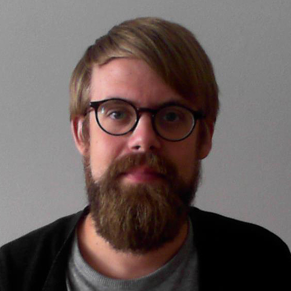

Om mig
Hej värld!
Jag heter Thomas Skoog och jag har skapat denna sida som en del i min Frontend-utbildning på Nackademin. Den ska fungera som ett fönster mot världen där man ska kunna se arbetsuppgifter och projekt jag utfört, och min utveckling i allmänhet.
Född 1987, uppvuxen i Vallentuna, men numera bosatt i Täby. Jag gick Bild & Form på estetprogrammet i gymnasiet, så mina intressen ligger närmare det grafiska snarare än det rent tekniska. Det är därför jag sökte mig till den här utbildningen, för sammanfoga dessa två områden. Jag kände att jag behövde fler praktiska färdigheter och kunskaper. Färdigheter som efterfrågas på en arbetsmarknad stadd i snabb utveckling och förändring. Just LIA-aspekten kändes väldigt relevant och lockande med denna utbildning.
Jag har ytterst ytliga programmeringskunskaper sedan tidigare, så det är något av ett mörklagt rum jag kastar mig in i. Tiden får utvisa om jag kommer ut levande.